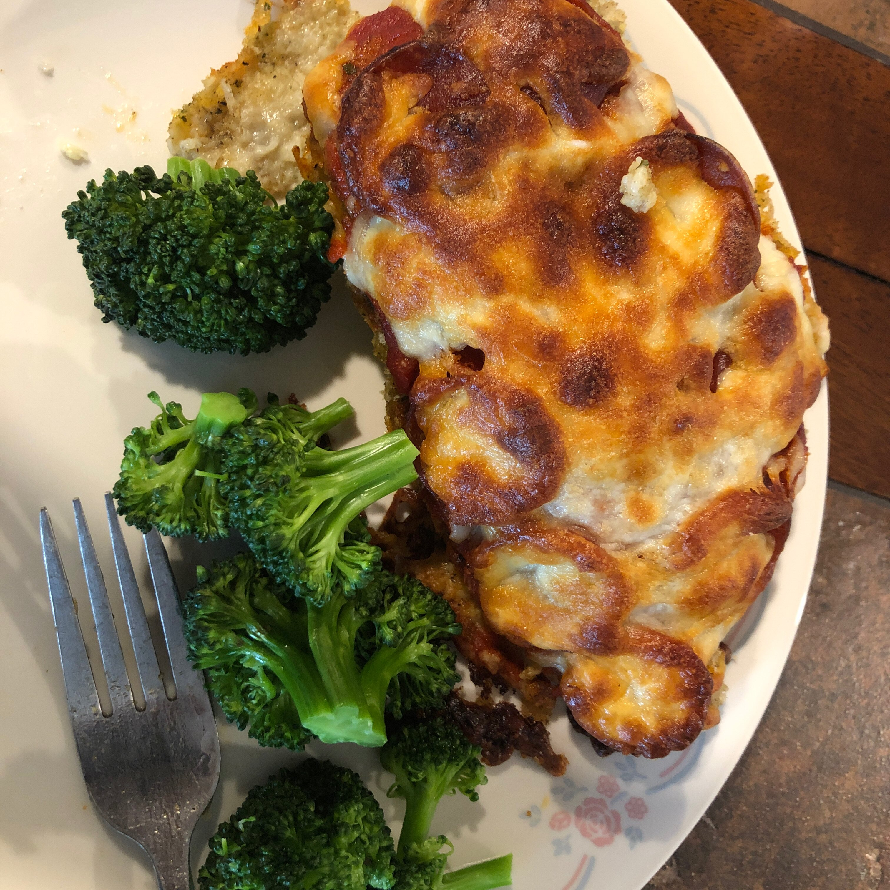

Chicken Pizza

Ingredients
½ cup Italian-seasoned bread crumbs
¼ cup grated Parmesan cheese
1 teaspoon ground black pepper
2 skinless, boneless chicken breast halves
½ cup pizza sauce, divided
½ cup shredded mozzarella cheese, divided
4 slices pepperoni, or to taste - divided
Steps
- Preheat oven to 400 degrees F (200 degrees C).
- Combine bread crumbs, Parmesan cheese, salt, and black pepper in a shallow bowl; place flour into a second bowl. Whisk egg and lemon juice together in a third bowl.
- Dip each chicken breast in egg mixture and dredge in flour; dip again in egg mixture and dredge chicken in crumb mixture until coated. Place coated chicken breasts into a baking dish.
- Bake in the preheated oven until chicken is heated through and crumbs are golden, about 20 minutes.
- Spoon 2 tablespoons pizza sauce onto each chicken breast, sprinkle each with half the mozzarella cheese, and top each with half the pepperoni slices.
- Bake until chicken is no longer pink inside and the juices run clear, about 10 more minutes. An instant-read meat thermometer inserted into the thickest part of a breast should read at least 160 degrees F (70 degrees C).